Kuru fasulye ve pilav, Türk mutfağının köklü ve geleneksel bir
kombinasyonudur. Osmanlı döneminden günümüze kadar uzanan bu yemek, halk
mutfağının temel taşlarından biri olmuştur. Genellikle beyaz fasulye,
soğan, salça, domates, et veya pastırma gibi malzemelerle hazırlanır ve
yanında tereyağlı sade pilav ile servis edilir. Türk kültüründe doyurucu
ve besleyici bir ana yemek olarak kabul edilen kuru fasulye, özellikle
kış aylarında sofraları süsler. Hem lezzeti hem de ekonomik olması
nedeniyle toplumun her kesiminde popülerdir ve misafir ağırlamak için de
tercih edilir.
Malzemeler
3 su bardağı kuru fasulye
1 çay bardağı ayçiçek yağı
1 soğan
1 yemek kaşığı salça
Kırmızı pul biber
2 su bardağı baldo pirinç
45 gr tereyağı
3 su bardağı sıcak su
Tuz
Tarif
Kuru fasulyeleri bir gün önceden suda bekletin.
Suyunu değiştirip hafif diri kalacak şekilde haşlayın.
Kırmızı pul biberle tatlandırın. Pirinci bol suyla yıkayarak
süzün.
Tereyağını tencerede ısıtın. Pirinçleri ekleyip birkaç dakika
kavurun.
Sıcak su ve tuzu ekleyip kısık ateşte pirinçler yumuşayana kadar
pişirin.
Pilavın üzerine kuru fasulyeyi ekleyip servis yapın.
Yemek Fotoğrafı
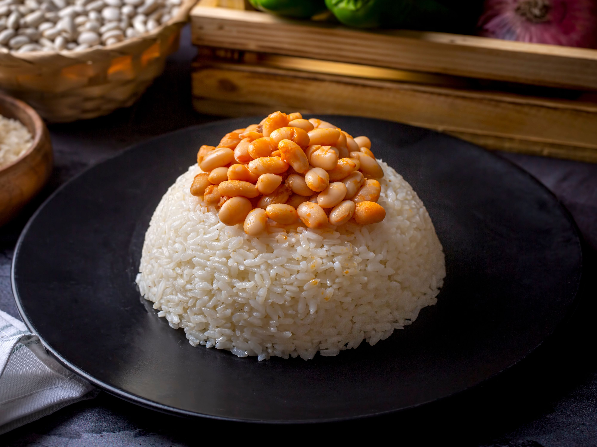
Yemek Videosu
Tavuklu Pilav
Tavuklu pilav, Türk mutfağında tarih boyunca halkın sevdiği bir yemektir
ve Osmanlı saray mutfağında dahi kendine yer bulmuştur. Geleneksel
olarak, tereyağında kavrulan pirincin tavuk suyunda pişirilmesiyle
hazırlanır ve üzerine haşlanmış veya didiklenmiş tavuk eti eklenir. İç
pilav versiyonunda ise badem, kuş üzümü ve baharatlar kullanılarak daha
zengin bir lezzet elde edilir. Doyurucu yapısı ve kolay
hazırlanabilirliği sayesinde, düğün, asker uğurlaması ve cenaze
yemekleri gibi toplumsal etkinliklerde sıkça tercih edilir. Hem ekonomik
hem de lezzetli olması nedeniyle, günümüzde de günlük sofralarda yerini
koruyan klasik bir Türk yemeğidir.
Malzemeler
500 gram tavuk göğüs eti
2 su bardağı pirinç
1 çay bardağı şehriye
3 yemek kaşığı tereyağı
1 su bardağı tavuk suyu
2 su bardağı kaynamış su
1 tatlı kaşığı tuz
1/2 (yarım) tatlı kaşığı karabiber
Tarif
İlk olarak tavuklarımızı haşlamak için tencereye koyuyoruz ve
üzerini bir parmak geçecek şekilde su ekleyerek kaynamaya
bırakıyoruz.
Haşlanan tavuklarımızı soğuması için kenara alıyoruz.
Biraz soğuduğunda tavuklarımızı tiftikliyeceğiz.
Bu sırada pirinçlerimizi de ılık suya koyup nişastasının
çıkmasını bekliyoruz.
Şehriyelerin rengi değişip, kokusu çıktığında pirinçlerimizi de
ekliyoruz ve 5-10 dakika kadar daha kavuruyoruz.
Daha sonra pirinçimizin üzerine tiftiklediğimiz tavuğumuzu
ekliyoruz.
1 bardak tavuk suyu ve 2 bardak kaynamış suyunu da ekledikten
sonra tuz ve karabiberi de ilave edip bir kere karıştırıyoruz ve
kapağını kapatarak kısık ateşte pişmeye bırakıyoruz. Ben pilav
pişirirken çok fazla karıştırmıyorum size de böyle tavsiye
ederim.
Pilavımız suyunu çekip tane tane olduğunda altını kapatıp,
kapağın üzerine demlenmesi için kağıt havlu koyuyoruz. Servis
yaparken havluyu alarak afiyetle pilavımızı yiyoruz. Ellerinize
sağlık.
Yemek Fotoğrafı
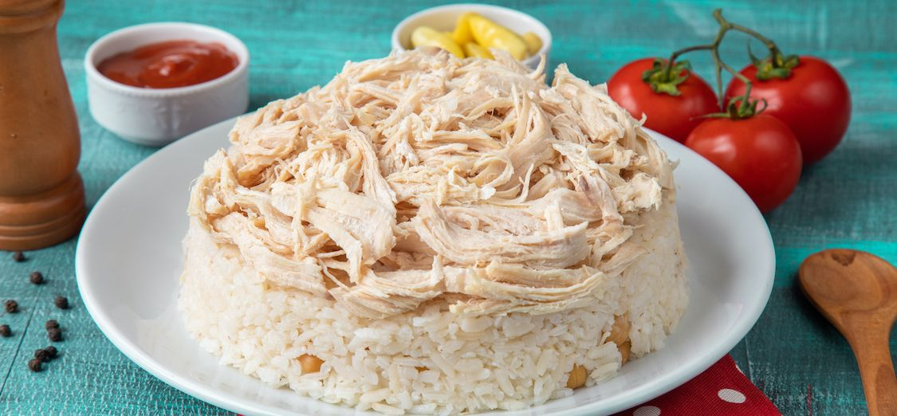
Yemek Videosu
İmam Bayıldı
İmam bayıldı, Osmanlı mutfağından günümüze ulaşan ve zeytinyağlı
yemekler arasında özel bir yere sahip olan bir patlıcan yemeğidir.
İsminin, yemeğin lezzetinden veya kullanılan zeytinyağının bolluğundan
etkilenen bir imamın bayılmasıyla ilişkilendirildiği rivayet edilir. Ana
malzemeleri patlıcan, domates, soğan, sarımsak ve zeytinyağıdır.
Patlıcanlar oyulup kızartıldıktan sonra, içi soğanlı ve domatesli
karışımla doldurularak tencerede ya da fırında pişirilir. Soğuk servis
edilmesi geleneksel olup özellikle yaz sofralarının vazgeçilmezidir.
Hafifliği ve lezzetiyle Türk mutfağının eşsiz zeytinyağlı yemeklerinden
biridir.
Malzemeler
7 adet patlıcan
2 adet büyük boy soğan
3 adet yeşil biber
3 adet domates
6 diş sarımsak
Yarım demet maydanoz
3 yemek kaşığı sıvı yağ
1 çay kaşığı pul biber
Yarım çay kaşığı karabiber
1 tatlı kaşığı tuz
1 tatlı kaşığı domates salçası
1 su bardağı sıcak su (200 ml)
Çeri domates
Tarif
Patlıcanları alacalı soyarak yarım saat kadar tuzlu suda
bekletin.
İç harcı için soğanları piyazlık doğrayın, 2-3 yemek kaşığı sıvı
yağ ile tavaya alın ve kavurmaya başlayın.
5 dakika kadar soğanlar kavrulduktan sonra küçük doğranmış
biberleri ve sarımsakları ilave edin, bir süre daha kavurun.
İnce kıyılmış maydanozu ekleyerek ocaktan alın.
Tuzunu akıtıp, havlu kağıt ile kuruladığımız patlıcanları bol
sıvı yağda çevirerek kızartın.
Kızaran patlıcanların yağının fazlasını alması için havlu kağıda
alın.
Fazla yağı süzüldükten sonra fırın kabına aldığınız
patlıcanların üzerini boydan çizgi şeklinde kesin. İçlerini
dikkatli bir şekilde açın.
İçlerine hazırladığınız iç harcından doldurun.
Süslemek için üzerine çeri domatesler yerleştirin ve son olarak
sıcak suda çözdürdüğünüz salçayı yemeğin üzerine gezdirin.
Hazır olan imambayıldıları önceden 190 derece ısıtılmış fırında
40 dakika pişirin.
Sürenin sonunda ince kıyılmış maydanozla süsleyerek servis edin.
Afiyet olsun!
Yemek Fotoğrafı
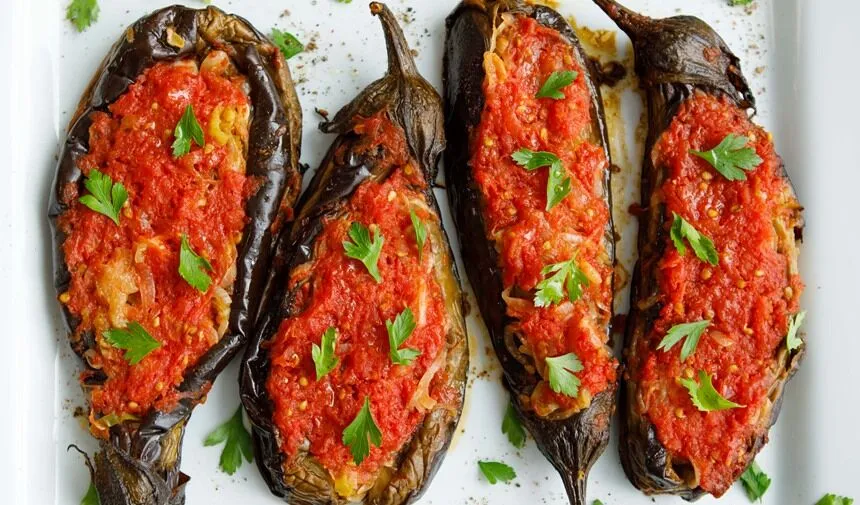
Yemek Videosu
Mantı
Mantı, Orta Asya kökenli bir yemek olup Türklerin göçebe dönemlerinden
bu yana kültürlerinde önemli bir yer tutmuştur. Moğollar tarafından
Anadolu'ya taşındığı düşünülür ve bu süreçte Türk mutfağında
zenginleşerek günümüzdeki halini almıştır. Küçük hamur parçalarının
içine genellikle kıyma, soğan ve baharat karışımı doldurularak
hazırlanır. Haşlandıktan sonra üzerine sarımsaklı yoğurt ve salçalı sos
dökülerek servis edilir. Kayseri usulü mantı, incecik açılması ve bolca
kıymayla doldurulmasıyla ünlüdür. Türk sofralarının vazgeçilmezi olan bu
lezzet, hazırlama emeğiyle özel günlerin ve misafir ağırlamalarının
klasik yemeği olmuştur.
Malzemeler
3,5 su bardağı un
1 su bardağı ılık su
1 çay kaşığı tuz
1 adet yumurta
250 g az yağlı kıyma
1 adet orta boy soğan
Yarım çay kaşığı karabiber
Yarım çay kaşığı pul biber
1 çay kaşığı tuz
2 yemek kaşığı tereyağı
2 yemek kaşığı salça
Sarımsaklı Yoğurt
1 tatlı kaşığı nane
1 tatlı kaşığı pul biber
Yarım tatlı kaşığı sumak
Tarif
3,5 su bardağı un ve 1 çay kaşığı tuzu karıştırıp, ortasını
açarak 1 yumurta ve 1 su bardağı ılık suyu ekleyin, yoğurup
dinlendirin
250 gram az yağlı kıyma, 1 doğranmış soğan, yarım çay kaşığı
karabiber, 1 çay kaşığı tuz ve yarım çay kaşığı pul biberi
karıştırın
Dinlenmiş hamuru 3 parçaya ayırın, bezeler yapın
Bezeleri unlu tezgahta yufkadan kalın olacak şekilde açın
Açılan hamurları küçük kareler halinde kesin, ortalarına kıymalı
harç koyarak mantı şeklini verin
Mantıları unlanmış bir tepside dondurun, sonra çift kilitli
poşetlerde saklayın
Kaynayan suya mantıları ekleyin ve 15-20 dakika pişirin
Tavada 2 yemek kaşığı tereyağı ve 2 yemek kaşığı salçayı kavurun
Pişmiş mantılara sosu ekleyip karıştırın
Tabağa alın, üzerine yoğurt ekleyip pul biber, nane ve sumakla
servis yapın
Yemek Fotoğrafı
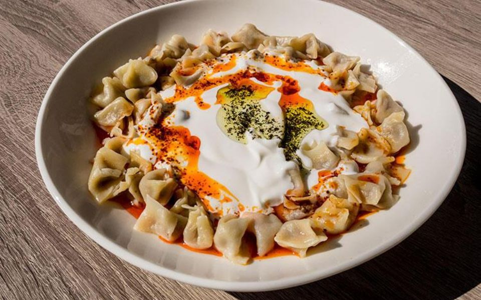
Yemek Videosu
Karnıyarık
Karnıyarık, Osmanlı mutfağından günümüze kadar uzanan ve Türk mutfağının
klasikleşmiş etli sebze yemeklerinden biridir. Ana malzemesi patlıcan
olan bu yemek, kızartılan patlıcanların içine kıyma, soğan, domates,
sarımsak ve baharatlarla hazırlanan iç harcın doldurulmasıyla yapılır.
Üzerine domates ve biber eklenip fırında pişirilerek servis edilir.
Adını, patlıcanların içinin oyularak doldurulmasından aldığı düşünülür.
Türk sofralarının vazgeçilmezi olan karnıyarık, pilav ve cacık gibi yan
yemeklerle birlikte hem günlük hem de misafir sofralarını süsleyen
lezzetli bir ana yemektir.
Malzemeler
6 adet küçük boy patlıcan (büyük ise ikiye bölebilirsiniz)
3 adet sivri biber
2 adet orta boy soğan
2 adet domates
2 adet sivri biber
2 diş sarımsak
Sıvı yağ, tuz, karabiber, kırmızıbiber
200 gr kıyma
1 çay bardağı sıcak su
1 yemek kaşığı salça
1 su bardağı sıcak su
Tarif
Patlıcanları çizgili soyup, yarım saat yağ çekmemesi için tuzlu
suda bekletin.
İyice yıkadıktan sonra suyunu havlu ile çektirin ve az yağda
kızartın. 3 adet biberi de yağda kızartın.
Daha sonra aynı tavada doğranmış soğanları kavurun, kıymayı
ekleyerek bir müddet daha kavurun ve biberleri, sarımsağı
ekleyerek 2 dakika daha kavurun.
Üzerine bir çay bardağı su ekleyerek 5 dk kaynatın.
Tepsiye patlıcanların ortalarını keserek yerleştirin ve bu
kesiklerden patlıcanın içine bastırarak iç malzemesine yer açın
ve malzeme ile patlıcanları doldurun.
Doldurduğunuz patlıcanların üzerine ortadan ikiye kestiğiniz
çeri domatesi ya da 1 adet domatesi eşit büyüklükte olacak
şekilde paylaştırın ve kızarttığımız biberlerden birer tane
koyun.
Ayrı bir yerde 1 kaşık salçayı, 1 su bardağı sıcak suda ezerek
patlıcanların aralarına dökün. Kıymalar çıkmasın diye üzerine
dökmeyin.
Daha sonra 170 derece de ısıttığınız fırına sürerek 20-25 dk
pişirin. Dilerseniz bu işlemi pilav tenceresi gibi bir tencerede
ocakta yapabilirsiniz. Aynı sürede tencerede de
pişecektir.Afiyet Olsun...
Yemek Fotoğrafı
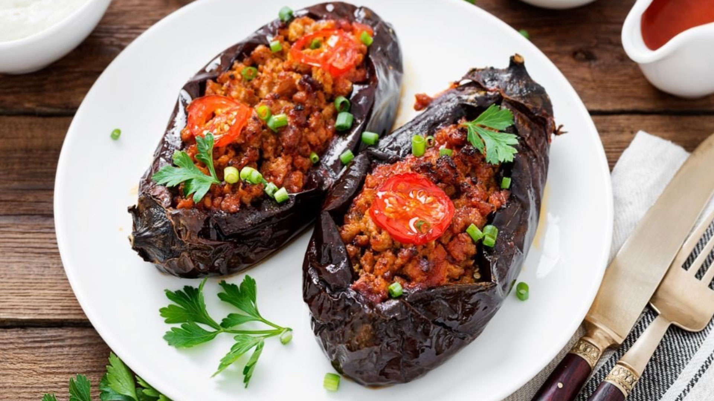
Yemek Videosu
Hünkar Beğendi
Hünkar Beğendi, Osmanlı saray mutfağından günümüze miras kalan,
lezzetiyle ün kazanmış bir yemektir. Rivayete göre, ilk kez Sultan
Abdülaziz döneminde saraya konuk olan Fransız misafirlere sunulmuş ve
padişahın bu yemeği beğenmesiyle adı "Hünkar Beğendi" olarak anılmaya
başlamıştır. Yemeğin ana malzemeleri közlenmiş ve püre haline getirilmiş
patlıcan, sütlü beşamel sos ve kuzu etidir. Patlıcan püresi üzerine
tereyağında kavrulan kuşbaşı etler yerleştirilerek hazırlanır. Hem
görselliği hem de zengin aromasıyla Osmanlı mutfağının en özel yemekleri
arasında yer alır ve bugün hala özel davet sofralarının baş tacıdır.
Malzemeler
200g kuşbaşı et
3 yemek kaşığı sıvı yağ
1 adet soğan
1 adet biber
1 adet domates
Yaklaşık 1 yemek kaşığı salça
1,5-2 su bardağı su
Tuz,kara biber
Beğendi İçin
3 adet patlıcan
1 çay bardağı süt (az gelirse ilave edebilirsiniz)
1 yemek kaşığı tereyağı
1 yemek kaşığı un
Tuz
Yarım su bardağı kaşar rendesi
Tarif
İlk olarak patlıcanlar fırında ya da ocakta közlenir. (Ben kemer
patlıcan kullandığım için beğendi çekirdekli oldu. Siz mümkünse
çekirdeksiz patlıcan kullanın)
Közlenen patlıcanlar kabuğu soyulup doğranır.
Beğendisi için tavada yağ ve un karıştırılarak kavrulur.
Patlıcanlar tavaya eklenir ve iyice ezilerek karıştırılır.
Ocağın altı iyice kısılarak süt yavaş yavaş karıştırarak
patlıcana ilave edilir. İyice karıştırılır.
Son olarak tuz ve ardından kaşar peynirini rendesi eklenir,
karıştırılır ve ocak kapatılır.
Kaşar da tamamen karıştırılarak beğendi hazırlanır.
Ayrı bir tava yağ ile ocağa konur. Tava ısındığında etler ilave
edilir. Etler suyunu bırakıp çekene kadar kavrulur.
İnce doğranmış soğan ve biberler eklenir, kavurmaya devam
edilir.
Onlar da kavrulunca salça eklenip karıştırılır.
Salçadan sonra çekirdekleri alınıp doğranmış domates eklenir.
1,5-2 su bardağı sıcak su da göz kararı eklenerek kapağı
kapatılıp etler pişene kadar pişirilir.
Piştikten sonra tuzu karabiberi eklenir, karıştırılır. Ocağın
altı kapatılır. (Eğer etiniz geç pişecek bir et ise düdüklüde
haşlayıp yapabilirsiniz. Su yerine et suyunuzu ilave edip
pişirirseniz de aynı tadı elde edersiniz.)
Servis tabağınıza önce beğendiyi üstüne de etinizi koyarak
servis edebilirsiniz.
Yemek Fotoğrafı
Yemek Videosu
Alinazik Kebabı
Alinazik kebabı, Osmanlı mutfağının zarif ve lezzetli yemeklerinden
biridir. Adını, "Alinazik" adı verilen bir kadın figüründen alır ve
Osmanlı döneminde saray mutfağında popülerleşmiştir. Yemekte, közlenmiş
patlıcanın püre haline getirilip yoğurt, sarımsak ve zeytinyağıyla
karıştırılarak servis edilmesinin ardından üzerine kuzu eti veya dana
eti ile yapılan kebap eklenir. Bu kebap, etin ve patlıcanın eşsiz
uyumuyla zengin bir lezzet sunar. Genellikle pilav ile birlikte sunulur
ve özellikle Etliekmek ve Kısır gibi yemeklerle Türk mutfağının önemli
öğelerindendir. Alinazik, Osmanlı saraylarından halk mutfağına geçerek
günümüzde de sıkça tercih edilen bir yemektir.
Malzemeler
400 gram süzme yoğurt
1 tatlı kaşığı tuz
2 diş sarımsak
4 adet kemer patlıcan
2 adet kırmızı biber
2 adet yeşil biber
500 gram dana kuşbaşı
1 yemek kaşığı tereyağı
1 çay kaşığı tuz
1 çay kaşığı pul biber
1 çay kaşığı kekik
Yarım çay kaşığı karabiber
Yarım su bardağı sıcak su (100 ml)
2 yemek kaşığı domates sosu (veya 1 tatlı kaşığı salça)
Tarif
Öncelikle patlıcanları yıkayıp kurulayalım ve üzerine bıçak ile
delikler açalım. Ardından tepsiye yerleştirelim. Bu aşamada
servis için yanına tercihe bağlı kırmızı biber ve yeşil biber
koyabilirsiniz.
Tepsimizi önceden ısıtılmış 220 °C fırına yerleştirelim ve 50
dakika közleyelim.
Diğer taraftan etleri tencereye alalım. Etler suyunu salıp
çekene kadar orta ateşte, ara ara karıştırarak pişmeye
bırakalım.
Daha sonra tereyağını ilave edelim. Birkaç dakika karıştırarak
etlerimizi kavuralım.
Tuzu, baharatları, domates sosunu ve sıcak suyu ilave ederek
karıştıralım. Mutlaka sıcak su ekleyin. Çok sulu olmayacak,
sadece koyu kıvamlı bir sosumuz olacak. Dilerseniz domates sosu
yerine 1 tatlı kaşığı domates salçası da kullanabilirsiniz.
Tencerenin kapağını kapatalım ve kısık ateşte, etler yumuşayana
kadar yaklaşık 40 dakika pişmeye bırakalım.
Etlerin pişme süresi uzarsa, sık sık kontrol edip gerekirse
tencerenin dibi tutmaması için az az sıcak su ilave
edebilirsiniz.
Sürenin sonunda pişen etlerimizi ocaktan alalım ve dinlenmeye
bırakalım.
Közlenen patlıcanların kabuklarını temizleyelim ve ince ince
doğrayalım.
Soğuduktan sonra, ezilmiş sarımsak ve süzme yoğurtla beraber
iyice karıştıralım. Tuzunu ayarlayalım.
Servis tabağına önce patlıcanlı harcı yayalım, üzerine ise
etleri koyalım. İsteğe göre süsleyerek, servis edebilirsiniz.
Yemek Fotoğrafı
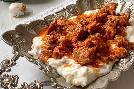
Yemek Videosu
Etli Yaprak Sarma
Etli yaprak sarma, Türk mutfağının en sevilen ve köklü yemeklerinden
biridir. Osmanlı İmparatorluğu'ndan bu yana varlığını sürdüren bu yemek,
genellikle zeytinyağlı ya da etli olarak hazırlanır. Etli versiyonunda,
ince asma yapraklarının içine pirinç, kıyma, soğan, baharatlar ve bazen
de kuş üzümü gibi malzemeler doldurulup özenle sarılır. Sarmalar,
yavaşça pişirilerek servis edilir. Yaprak sarma, hem ev sofralarında hem
de özel günlerde sıkça tercih edilir, özellikle misafirler için
hazırlanan doyurucu ve lezzetli bir yemektir. Etli yaprak sarma,
Akdeniz, Orta Doğu ve Balkan mutfaklarında da benzer şekillerde
yapılmakla birlikte, Türk mutfağının en bilinen yemeklerinden biridir.
Malzemeler
250-300g orta yağlı kıyma
1 su bardağı pirinç
2 adet rendelenmiş domates
3 orta boy soğan
½ demet taze nane
½ demet maydanoz
1 çorba kaşığı ev biber salçası
Yarım çay bardağı sıvı yağ
Karabiber
Tuz
60-70 adet taze veya salamura yaprak (büyüklüğüne göre sayı
değişebilir)
Yarım çay kaşığı karabiber
Yarım su bardağı sıcak su (100 ml)
2 yemek kaşığı domates sosu (veya 1 tatlı kaşığı salça)
Tarif
Yaprağınız salamura ise sıcak suda kaynatıp bekleterek tuzundan
arındırın, taze ise kaynattığınız sıcak suya atıp 3-4 dk
bekleterek yumuşamasını sağlayın…
Kıymamızı iç hazırlayacağız kaba alalım.
Domateslerimiz rendeleyelim.
Pirinci yıkayıp ekleyelim.
Yemeklik ince doğranmış soğanı ,ince kıyılmış yeşilliğimizi,
salçamızı, tuz karabiberimiz ve en son yağımızı ekleyelim.
Elimizle karıştıralım.
Soğumuş yaprakların saplarını keselim.
Tenceremizin dibinde kullanmak üzere ayıralım.
Yapraklarımızı parlak yüzü alta gelecek ve sap kısmı bize
bakacak şekilde tabağımıza yerleştirelim.
İçimizi arzu ettiğimiz kadar koyalım ve yayalım.
Sapları tencere dibine yayalım, sarmalarımızı tenceremize sıralı
şekilde dizelim.
Üzerine 2 bardak kadar sıcak suyumuzu ekleyelim.Bir porselen
tabak kapatıp ,25-30 dk. pişmeye bırakalım. Yemeğimizi
dinlendirelim.Ardından servis edelim.
Yemek Fotoğrafı
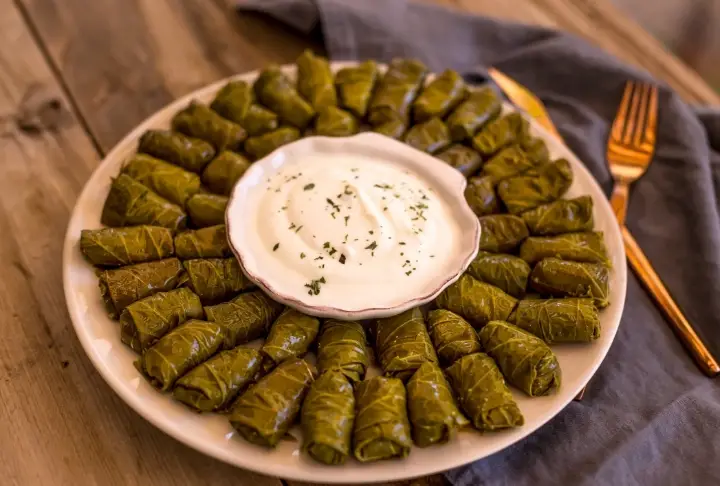
Yemek Videosu
Kayseri Yağlaması
Kayseri yağlaması, Kayseri’ye özgü geleneksel bir yemektir ve özellikle
Kayseri mutfağının en bilinen ve sevilen lezzetlerinden biridir. Osmanlı
dönemine dayanan bu yemek, ince açılmış yufkanın üzerine kıymalı harç
konarak fırında pişirilir. Harcında kıyma, soğan, baharatlar ve bazen
domates bulunur, bu karışım yufkalarla örtülerek üzerine tereyağı
eklenip fırında güzelce pişirilir. Sonuçta elde edilen yemek, oldukça
lezzetli ve yağlı bir yapıya sahip olup, bazen yoğurtla birlikte servis
edilir. Kayseri yağlaması, hem sokak yemekleri hem de özel gün yemekleri
arasında yer alır ve zengin mutfak kültürünün simgelerindendir.
Malzemeler
1 su bardağı ılık su (200 ml)
1 su bardağı ılık süt (200 ml)
1 paket instant maya
1 tatlı kaşığı tuz
1 tatlı kaşığı şeker
2 yemek kaşığı sıvı yağ
5 su bardağı un
İç Harcı İçin
500 gr. kıyma
2 adet soğan
2 adet yeşil biber
2 adet kırmızı biber
2 adet domates
2 diş sarımsak
1 yemek kaşığı salça
1 yemek kaşığı tereyağı
1 çay bardağı zeytinyağı
1 çay bardağı su
1 tatlı kaşığı tuz
1 tatlı pul biber
1 çay kaşığı karabiber
1 çay kaşığı kimyon
Üzeri İçin
Sarımsaklı Yoğurt
Tarif
Un, maya, tuz ve şekeri yoğurma kabına alıp karıştırın. Üzerine
süt, su ve sıvı yağ ekleyin. Yumuşak kıvamlı bir hamur yoğurun.
Hazırladığınız hamurun üzerini streç filmle kapatıp temiz bir
bezle örterek 40 dakika mayalanmaya bırakın.
Kıyma suyunu çektikten sonra zeytinyağı ve tereyağını ekleyin,
tereyağı eriyene kadar kavurun.
Doğranmış soğan, sarımsak, kırmızı biber ve yeşil biberi tavaya
ilave edip kavurun.
Daha sonra salça, karabiber, kimyon, pul biber ve tuzu ekleyerek
karıştıralım.
Kabuklarını soyup doğradığınız domatesi tavaya ekleyip
karıştırmaya devam edin.
Son olarak sıcak suyu ekleyin ve kıymalı harcı suyunu çekene
kadar 8-10 dakika kısık ateşte pişirin.
Mayalanan hamuru tezgaha alıp, havasını alacak şekilde yoğurun.
Hamuru 12 eşit parçaya ayırın ve bezeler haline getirin.
Bezeleri açıp tavada pişirin, üzerine kıymalı harç koyup kat kat
yerleştirin. Üzerine yoğurt ekleyip dilimleyerek servis edin.
Yemek Fotoğrafı
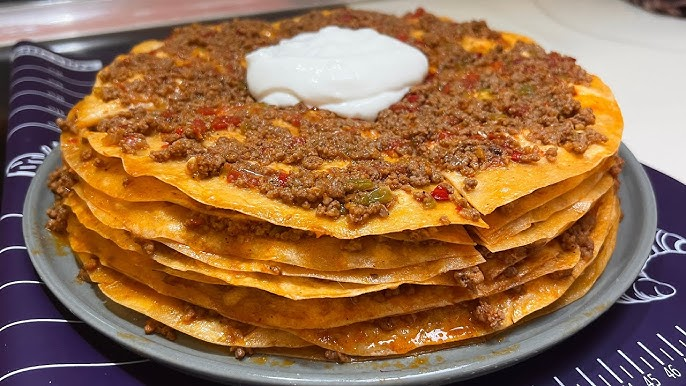
Yemek Videosu
Beyti Kebabı
Beyti kebabı, Türk mutfağının sevilen lezzetlerinden biri olup adını,
1945 yılında İstanbul’da açılan ünlü Beyti Güler restoranından almıştır.
Geleneksel olarak kıyma veya kuzu etinden yapılan kebap, uzun şekilde
hazırlanıp ızgarada pişirilir. Daha sonra lavaşa sarılır, dilimlenerek
servis edilir. Genellikle üzerine domates sosu ve tereyağı gezdirilir,
yanında yoğurtla sunulur. Osmanlı mutfağından esinlenen bu kebap, hem
yerli hem de yabancı yemek tutkunlarının ilgisini çeken bir lezzet
olmuştur. Lezzeti, sunumu ve tarihsel hikayesiyle Beyti kebabı, Türk
mutfağının unutulmaz tatları arasında yer alır.
Malzemeler
2 Adet Yufka
Sosu İçin
4 adet rendelenmiş domates
2 yemek kaşığı tereyağı
Karabiber, toz kırmızı biber
Tuz
Köftesi İçin
400 g kıyma
1 adet yumurta
1 diş sarımsak
1 adet soğan
1/2 (yarım) çay bardağı galeta unu
Karabiber, pul biber
Tuz
Servis İçin
Çırpılmış Yoğurt
Tuz
Tarif
Köftesi için; kıyma, yumurta, rendelenmiş soğan ve sarımsak,
yarım çay bardağı galeta unu, karabiber, pul biber ve tuzu
derince bir kaba alarak yoğuralım.
Köfteleri yassı ve uzun şekiller oluşturarak pişirme kağıdı
serdiğimiz fırın tepsisine yerleştirelim.185 derece ısınmış
fırında 10-12 dakika fırınlayalım.
Köftelerimizi fırından aldıktan sonra 1 adet yufkamızı tezgaha
alarak ikiye bölelim.
Yarım yufkanın üzerine eritilmiş tereyağından güzelce sürelim.
Yufkanın geniş tarafına köftelerimizi tek sıra halinde dizelim
ve yufkanın kenarlarını içe katlayarak rulo şeklinde saralım. Bu
aşamada çok gevşek sarmamalısınız.
Tüm köfteleri aynı şekilde sardıktan sonra rulolarımızı verev
şeklinde dilimleyerek yağlı kağıt serilmiş fırın tepsisine
sıralayalım.
Üzerlerine eritilmiş tereyağından sürerek tekrar fırına
yerleştirelim.
185 dereceye ısıtılmış fırında üzerleri hafif pembeleşinceye
kadar pişirelim.
Sosu için; küçük bir tavada tereyağını eritelim.
Üzerine domates rendesi boşaltarak 3-4 dakika pişirelim. Eğer
domates mevsimi değilse renk vermesi için salçada
ekleyebilirsiniz.
Son olarak baharatları ve tuzu ilave edip karıştıralım sonra
ocaktan alalım.
Servis tabağına köftelerimizi alalım. Ortasına bolca yoğurt
koyalım.
Üzerine domates sosundan gezdirip ince kıyılmış maydanoz
serpiştirdikten sonra servis edelim.Afiyet Olsun...
Yemek Fotoğrafı
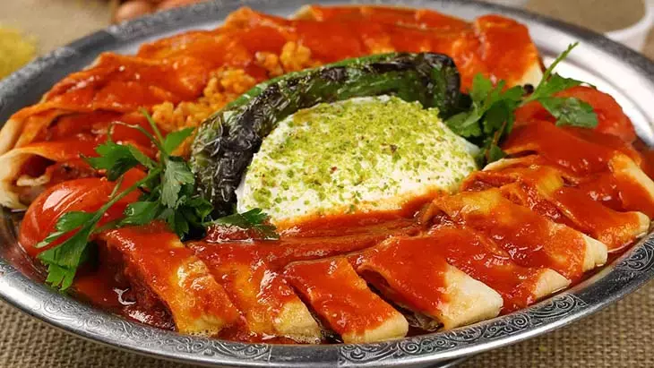
Yemek Videosu
Etsiz Nohut
Etsiz nohut yemeği, Orta Doğu, Akdeniz ve Anadolu mutfağının önemli bir
parçası olup, tarihi antik döneme kadar uzanır. Nohut, bölgenin iklimine
uygun olması ve besleyici özellikleri sayesinde yüzyıllardır halk
mutfağında temel bir gıda olarak kullanılmıştır. Etsiz versiyon,
özellikle etin bulunmadığı veya ekonomik nedenlerle tercih edilmediği
dönemlerde yaygınlaşmış, lezzetini soğan, domates, salça, zeytinyağı ve
baharatlarla zenginleştirerek herkesin sofrasında yer edinmiştir.
Bitkisel protein açısından zengin olması, besleyici ve vegan/vejetaryen
dostu bir seçenek olarak da günümüzde popülerliğini sürdürmektedir.
Malzemeler
2 su bardağı nohut
1 adet kuru soğan
2 adet yeşil biber
5 yemek kaşığı sıvı yağ
1,5 yemek kaşığı domates salçası
1 tatlı kaşığı biber salçası
1 tatlı kaşığı tuz
yarım çay kaşığı karabiber
yarım çay kaşığı pul biber
1 çay kaşığı kimyon
5 su bardağı sıcak su
Tarif
Etsiz nohut yemeği için öncelikle uygun bir kabın içerisine
nohutu alalım, üzerine su ekleyerek gece bu şekilde bekletelim.
Daha sonra nohutların suyunu süzerek uygun bir tencereye alalım.
Tekrardan üzerini geçecek kadar su ilave edelim ve yaklaşık 20
dakika ön haşlama yapalım.
Nohutlar haşlanırken diğer taraftan soğanı yemeklik olacak
şekilde doğrayalım.
Yeşil biberi de yine yemeklik doğrayalım. Bu sırada haşlanan
nohutların suyunu süzerek bir kenarda bekletelim.
Tencereye 5 yemek kaşığı sıvı yağ alalım. Doğradığımız soğan ve
biberleri tencereye aktaralım.
Soğanlar ve biberler diriliğini kaybedinceye kadar birkaç dakika
karıştırarak kavuralım.
Kavrulan soğanlar ve biberlerin üzerine domates salçası, biber
salçası, tuz, karabiber, pul biber ve kimyonu ekleyelim. Birkaç
dakika karışarak tekrardan kavuralım.
Ardından süzdüğümüz nohutu ilave ederek birkaç dakika kavuralım.
Son olarak yemeğimize sıcak su ilave edelim. Karıştırdıktan
sonra tencerenin kapağını aralıklı olacak şekilde kapatıp
nohutlar yumuşayıncaya kadar pişmeye bırakalım.
Nohutlarımız tamamen yumuşadıklarında yemeğimiz pişmiş demektir.
Ocaktan alıp 15 dakika dinlendirdikten sonra sırayla servis
edebilirsiniz.
Yemek Fotoğrafı
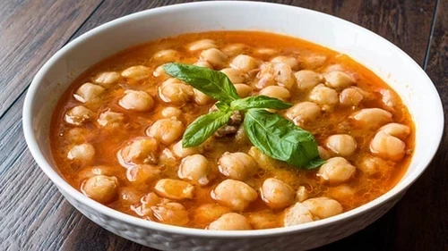
Yemek Videosu
Etsiz Bamya
Bamya yemeği, kökenleri Orta Doğu, Afrika ve Akdeniz mutfaklarına
dayanan, Osmanlı İmparatorluğu döneminde de yaygınlaşan geleneksel bir
yemektir. Hem kuru hem de taze bamya kullanılarak yapılan bu yemek,
Türkiye’de genellikle yaz ve kış aylarında farklı şekillerde hazırlanır.
Osmanlı mutfağında saray sofralarının vazgeçilmezlerinden biri olan
bamya yemeği, limon suyu veya nar ekşisi ile tatlandırılarak ekşimsi bir
lezzet kazandırılır. Ana malzemeleri bamya, domates, soğan, zeytinyağı
veya tereyağı ve tercihe göre et veya kıyma olan bu yemek, hem besleyici
özellikleri hem de hafifliği ile tanınır. Bamyanın içerdiği lif, vitamin
ve mineraller sağlık açısından önemli katkılar sağlar. Geleneksel olarak
sade pirinç pilavı ve yoğurt eşliğinde servis edilir.
Malzemeler
Yarım kg taze bamya
2 adet domates
1 adet soğan
3 adet yeşil biber
Yarım yemek kaşığı salça
2 yemek kaşığı sıvı yağ
Yarım limon
Baharat (Karabiber, pul biber)
Tuz
5 su bardağı sıcak su
Tarif
Soğanı yemeklik doğrayarak kavurun.
Pembeleşince doğranmış biberi ilave ederek biberleri de kavurun.
Küp küp doğranmış domates ve salçayı ilave edin.
2-3 dk. karıştırın ve yıkanmış temizlenmiş bamyaları ekleyin.
1-2 dakika da bamyalar kavrulunca yarım limon suyunu sıkın ve
sıcak su ilave edin.
Son olarak tuz ve baharatları ekleyerek çok karıştırmadan
pişmeye bırakın.Afiyet olsun...
Yemek Fotoğrafı
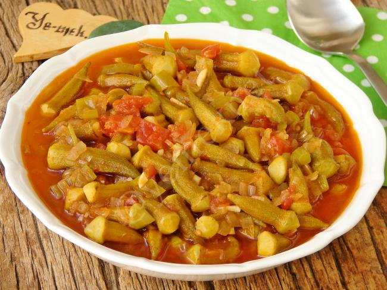
Yemek Videosu
Kuzu Tandır
Kuzu tandır, kökenleri Türk mutfağına dayanan ve özellikle Orta Asya’dan
Anadolu’ya kadar uzanan Türk göçleriyle şekillenmiş, Osmanlı saray
mutfağında da önemli bir yer edinmiş geleneksel bir yemektir. Adını,
geleneksel pişirme yöntemi olan toprak tandırdan alır; tandır, etin
yavaş yavaş pişirilerek içinin yumuşacık, dışının ise hafifçe kızarmış
bir dokuda olmasını sağlar. Genellikle kuzu eti bütün halde veya iri
parçalarla hazırlanır ve sadece tuz ve tereyağı gibi sade malzemelerle
marine edilerek doğal lezzeti ön planda tutulur. Günümüzde fırın ya da
düdüklü tencerede modern tekniklerle hazırlanabilen kuzu tandır, pilav
veya patates püresi eşliğinde servis edilerek şık ve doyurucu bir ana
yemek olarak sofralarda yer bulur.
Malzemeler
Kuzu kol
3 diş ezilmiş sarımsak
1,5 çay kaşığı karabiber
1,5 çay kaşığı kırmızı biber
1,5 çay kaşığı kimyon
1 çay kaşığı kekik
1,5 çay kaşığı tuz
Zeytinyağı
Tarif
Karabiber, kırmızı biber ,kimyon, kekik, tuz ,sarımsak ve
zeytinyağı bir kabın içerisinde karıştıralım.
Ete bıçakla çizikler atalım
Hazırlamış olduğumuz zeytinyağlı karışımı etin her tarafına
sürelim ve yağlı fırın kağıdıyla açık kalmayacak şekilde saralım
en az 30-45 dakika bekletelim.
220 derece fırında 1, 5-2 saat pişirelim.
Alta tırnak pide yanına domates soğan maydanoz ve biberle servis
edelim.
Yemek Fotoğrafı
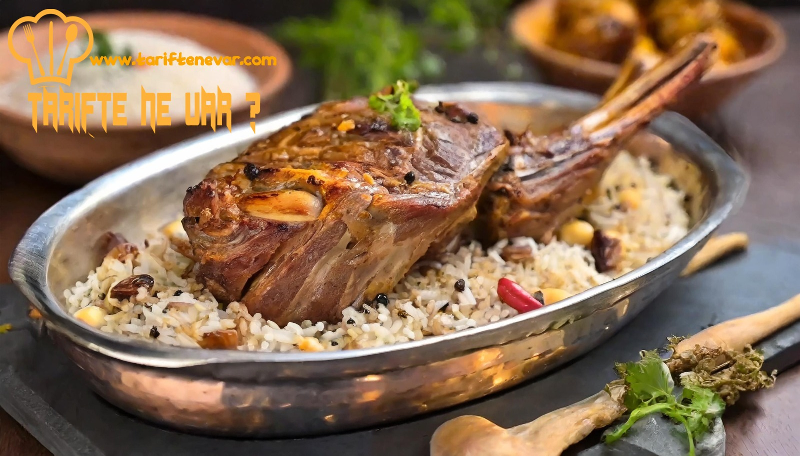
Yemek Videosu
Trabzon Usulü Kuymak
Kuymak, Karadeniz mutfağının vazgeçilmez lezzetlerinden biridir ve
özellikle Trabzon ile Rize yörelerinde sıkça tüketilir. Kökeni yüzyıllar
öncesine dayanan bu yemek, bölgenin tarımsal ürünlerinden elde edilen
malzemelerin değerlendirilmesi amacıyla ortaya çıkmıştır. Ana
malzemeleri mısır unu, tereyağı ve yöresel kolot veya tel peyniridir. Bu
basit ama lezzetli karışım, tereyağının hafif kızartılması ve peynirin
eriyip uzamasıyla karakteristik bir kıvam alır. Kuymak, sıklıkla
kahvaltılarda tüketilir ve doyurucu bir enerji kaynağı olarak bilinir.
Yörede aile sofralarının sıcak bir sembolü olmasının yanı sıra,
günümüzde de kültürel bir miras olarak önemini korur.
Malzemeler
Kuzu kol
4 yemek kaşığı mısır unu
2 su bardağı su
2 yemek kaşığı tereyağı
1 kase kadar telli peynir, imansız peynir ve kaşar peyniri
karışımı
Tuz (peynirlerin tuz oranına göre istediğiniz ölçüde)
Tarif
Bakır ya da teflon tavaya 2 yemek kaşığı tereyağını koyup
eritelim.
4 yemek kaşığı mısır ununu ve tuzu ekleyip unumuzu kavuralım.
Hafif rengi dönüp kokusunu verince 2 su bardağı soğuk suyumuzu
da yavaş yavaş ekleyelim.
Topaklanma olmaması için karıştıralım.
Altı kısık bir şekilde suyunu çekip yağını üzerine verinceye
kadar yaklaşık 5 dakika pişirelim.
Bu aşamada peynirli karışımımızı ekleyip fazla karıştırmadan
peynirimiz eriyip tekrar yağı yüzüne çıkınca altını kapatalım ve
sıcak sıcak servis edelim. Afiyet olsun…
Yemek Fotoğrafı
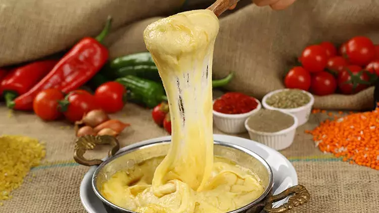
Yemek Videosu
Kısır
Kısır, Türk mutfağının sevilen mezelerinden biridir ve kökeninin Orta
Doğu mutfağına dayandığı düşünülmektedir. Esas malzemesi ince bulgur
olan kısır, salça, zeytinyağı, limon suyu, nar ekşisi, taze soğan,
maydanoz ve çeşitli baharatlarla harmanlanarak hazırlanır. Pratik yapımı
ve besleyici içeriğiyle hem gündelik sofralarda hem de davetlerde sıkça
yer bulur. Tarihsel olarak Anadolu'nun tarım toplumlarına dayanan bu
yemek, bulgurun uzun süre saklanabilmesi ve kolay pişirilmesi sayesinde
yaygınlık kazanmıştır. Kısır, hem lezzeti hem de kolay
hazırlanabilirliğiyle kültürel sofralarda vazgeçilmez bir yer tutar.
Malzemeler
1 büyük su bardağı ince bulgur
Yarım su sıcak su (bulguru ıslatmak için)
3 yaprak marul
1 demet maydanoz
3 adet taze soğan
1 yemek kaşığı zeytinyağı (soğanı kavurmak için)
1 küçük salatalık
5 tane çeri domates
1 tane orta boy sivri biber
Yarım çay bardağı zeytinyağı (az gelirse ekleme yapın)
1 yemek kaşığı nar ekşisi
Karabiber
Pulbiber
Kimyon
Tuz
1 yemek kaşığı biber salçası
1 tatlı kaşığı domates salçası
1 diş sarımsak
1 küçük soğan
Tarif
Öncelikle bulguru sıcak suyla bir miktar ıslatıyoruz.
Ama çok az su ile, sadece suyu döktüğümüz anda hemen kendisini
çekecek kadar ve kapağını kapatıp 5 dakika demlendiriyoruz.
Küçük bir tavada kuru soğanı ve sarımsağı, 1 yemek kaşığı
zeytinyağı ile çok az kavurup salçasını ilave ediyoruz.
2 dakika daha kavurup ocağı kapatıyoruz.
Bulgurun içine döküyoruz ve bütün baharatları, nar ekşisini ve 1
çay bardağı zeytinyağını da ilave edip iyice harmanlıyoruz.
İnce ince doğradığımız yeşillikleri ilave edip iyice birbirine
yedirdikten sonra en son domateslerimizi ilave edip
karıştırıyoruz ve servis yapıyoruz. Afiyet olsun...